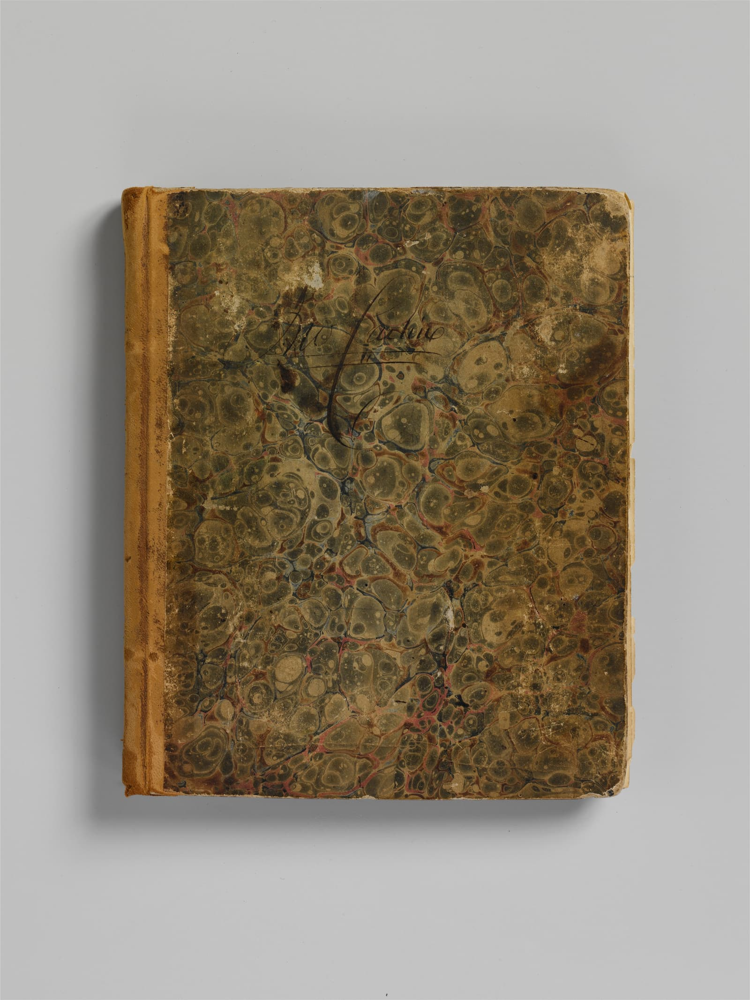

AI 智慧理賠
理賠立案到派件
「全自動執行理賠立案到派件，精確解析診斷書，節省逾80%人工作業時間」
AI 智能理賠解決方案昕力資訊（TPIsoftware）研發並導入自有軟體，把 API、資料與 AI 安全接進既有系統；規範要求直接做在產品功能裡。
開放銀行、金融檢查與政府 API 規範的要求，digiRunner 已有對應功能，專案不必從零設計合規架構。

銀行與保險公司導入 API 管理平台時，開放銀行與金融檢查的要求已經對應好。
「昕力資訊 digiRunner API 管理平台反應台灣開放銀行金管會法規要求」
「昕力資訊實現三階段開放銀行規範」
「針對金融檢查，完善 API 管理：」
政府單位建置 API 管理平台時，共通性規範與惡意行為防護已經內建。
「符合國家發展委員會【共通性應用程式介面規範】。」
「具備惡意行為防護功能，可以識別程式碼注入、跨站台腳本攻擊、SQL 攻擊語法與 XML、JSON 結構語法威脅；並能搭配防毒軟體偵測病毒攻擊。」
「為臺北市政府建置符合統一標準的API管理平台，使各機關的異質應用系統資料介接，讓市府推動資料開放政策，拓展創新應用之可行性，極大化開放資料加值應用與民眾參與公共政策。此外，昕力顧問團隊更協助市府建立API管理制度，並輔導各級機關一一導入上線。」
理賠立案到派件
「全自動執行理賠立案到派件，精確解析診斷書，節省逾80%人工作業時間」
AI 智能理賠解決方案醫療單據建檔
「透過免模板辨識醫療單據解決格式變動痛點，提升辨識率並降低40%維護人力」
AI 智慧建檔解決方案跨行詐騙聯防
「標準化聯防流程，詐騙事件即時共享，提升跨行交換的效率與透明度」
看所有成功案例核心系統與大型主機透過 API 接進來，AI 模型也走同一道 Gateway。
「整合 MCP 協定與 AI Gateway 架構，讓 AI 模型安全串接企業 API、資料與業務流程」
依場景選擇合適的大語言模型，從智能客服、語音質檢到文件辨識都有產品。
「SysTalk.ai 支援主流開源與企業級 LLM（如 70B 模型），企業可依場景選擇最合適的模型」
「FIDO2 無密碼 零信任身分驗證」
「利用機器學習模型分析日誌並檢測異常，能快速識別入侵與攻擊」
碳盤查、產品碳足跡與 CBAM 申報資料，用同一套平台整理。
「碳盤查 盤查企業自身碳排放 包括跨地區/廠區/設備/系統 CBAM 自動文件資訊化碳排 並產出申報清冊 碳足跡 計算企業產品碳足跡 計算相關供應鏈碳足跡」
使用者登入不必用密碼，系統日誌裡的入侵與攻擊由機器學習找出來。
OrientAI 只部署在企業端，資料的掌控權在企業手上。Agent 的權限、影子 AI 與 Token 用量都有管控；搭配群聯 aiDAPTIV，地端架構離線也能運行。
資料會交給外部嗎？「不會。OrientAI 只會部署於企業端，資料掌控權為企業所有。」
統一管控「AI Agent 統一管控與授權標準化 Token 用量監控與資源配置最佳化 消除影子 AI，防止機敏資料外洩 跨部門統一權限管理與資料治理」
離線運行「結合群聯 aiDAPTIV 獨家記憶體擴充技術，突破算力與容量限制，地端架構確保離線仍可穩定運行」
擴充「MCP 擴充應用 標準化整合功能模組，彈性擴展業務，持續優化流程」
成本「Token 成本控管」
導入前，先做 AI 導入情境分析
接著提出解決方案搭配建議
然後做效益評估
導入中，模型評估、微調
昕力自己研發產品，也負責導入規劃、模型設定、建置與應用模組設計，決策者不必在產品原廠和導入廠商之間協調。
「昕力資訊提供完整的導入規劃、模型設定、建置與應用模組設計服務」
談需求，或預約 demo。填寫聯絡表單，說明您的產業、現有系統與想接上的服務，昕力的業務會與您聯絡。